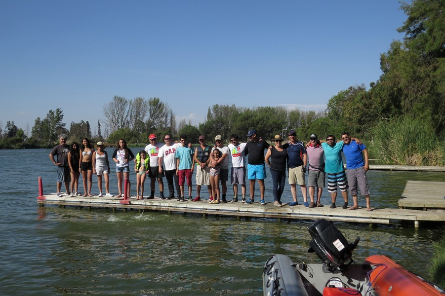
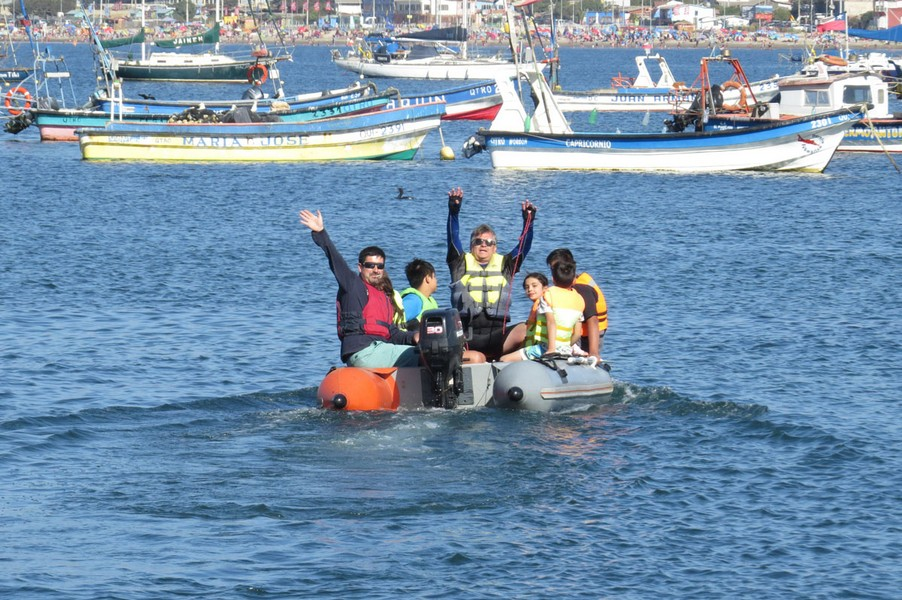
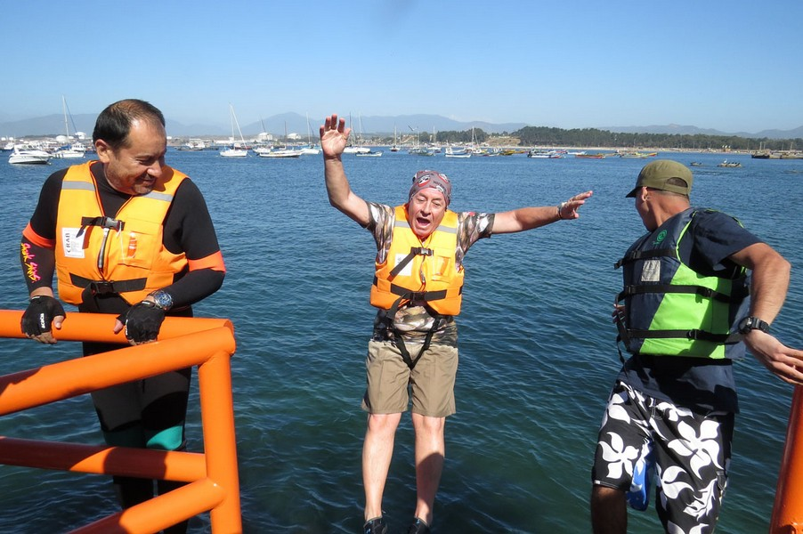
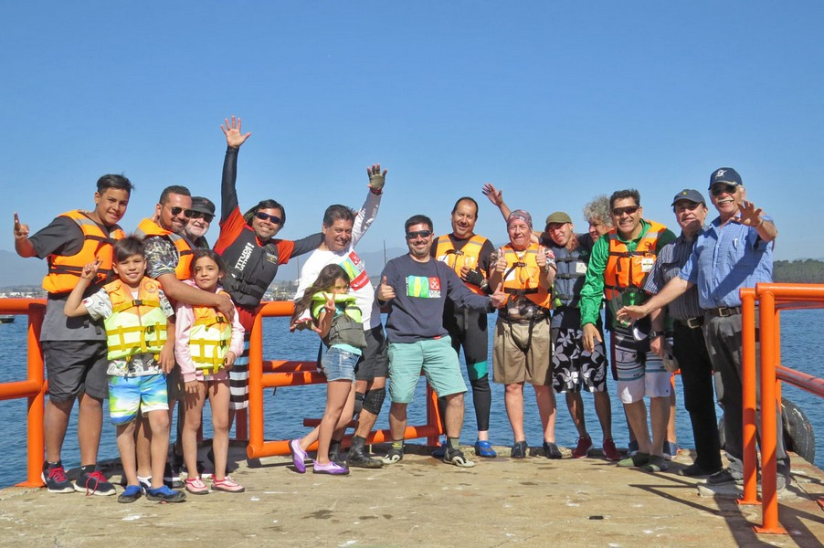
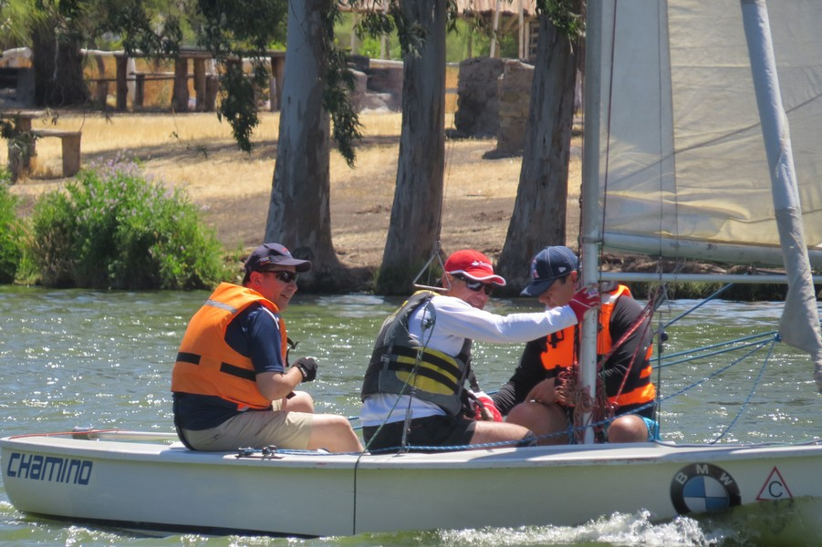
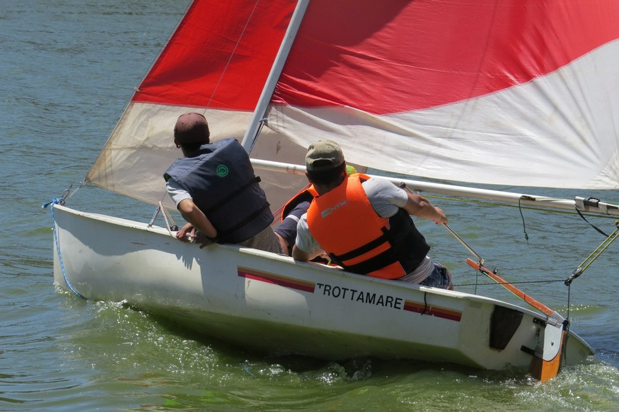

Aspectos Reglamentarios
Le corresponde a la Armada de Chile, a través de la Dirección General del Territorio Marítimo y de Marina Mercante, la regulación y control de la actividad náutica deportiva, a través del Reglamento General de Deportes Náuticos, aprobado por D.S.(M) N°214 del 25 de marzo de 2015.
Licencia Deportiva Náutica
Documento mediante el cual la Autoridad Marítima otorga autorización para operar una embarcación deportiva, a una persona natural.
Estructura del Curso
Navegación al mando de todo tipo de embarcaciones en aguas protegidas.
Módulo Teórico
Inicio: 20:00 Hrs
- ● Nomenclatura básica
- ● Reglamentación de patrón de bahía
- ● Meteorología básica
- ● Navegación a vela y motor, Motores marinos
- ● Primeros auxilios
- ● Resolución de banco de preguntas
Módulo Práctica 1
Sábado o Domingo
- ● Nudos marineros
- ● Armado de embarcación
- ● Navegación a vela
Módulo Práctica 2
Cendyr Náutico
- ● Navegación a vela y motor
- ● Examen práctico ese mismo día
Requisitos Generales
- Mayor de 14 años.
- Cumplir requisitos estipulados en el Reglamento General.
- Aprobar los exámenes que fija el Reglamento.
- Certificado de salud compatible.
- Autorización notarial de padres o guardador (para menores).
Materias de Examen
Teórico
- Náutica y maniobra.
- Navegación básica.
- Seguridad y 1ros auxilios.
- Meteorología básica.
- Reglamentación marítima.
- Operación de motores.
Práctico
- Emergencias (vela y motor).
- Gobierno de embarcación de bahía a vela y motor.
Quiénes Somos
Escuela Náutica Dr. Anselmo Hammer
de la Nao Santiago
Nuestra escuela es una institución sin fines de lucro, orientada a la promoción de actividades náuticas en nuestro país, con la participación de profesores expertos en materias de teoría de navegación, seguridad, primeros auxilios, navegación en laguna y mar, operación y mantención de motores náuticos, etc.
La Escuela Náutica Doctor Anselmo Hammer, de la Nao Santiago, es una institución acreditada por la Dirección del Territorio Marítimo “DIRECTEMAR”, según la Resolución N° 12.400/103 del 21 de noviembre de 1997 y puede dictar cursos y tomar exámenes que son validados ante la autoridad marítima para el otorgamiento de las licencias deportivas náuticas de “Patrón Deportivo de Bahía” y “Patrón de Lancha”.
"Nuestra escuela posee la impronta de ofrecer mucho más que los temas reglamentarios que se exigen. La autoridad marítima y también cada alumno egresado ha reconocido en nuestra institución un lugar de fraternidad y amistad, donde los lazos que nos unen en torno a la navegación son para siempre. Poseemos la cualidad de tener lazos firmes con centros náuticos de la costa central que nos dan las facilidades de practicar este deporte y participar de sus regatas."
El mar como nuestra fuente de inspiración de vida nos entrega esto y mucho más. ¡Únete a nosotros y se un navegante!
Vida Náutica
Si quieres conocer mas de la trayectoria de nuestra Escuela revisa nuestra galería.

25 Años de la Escuela Náutica
Cmdte. Base Naval Quinta Normal don Daniel Coca junto al Capitán de la Nao Santiago don Sergio Zalagarda Rowe.

Familia de Navegantes
Alumnos previo al exámen práctico en el Cendyr Naútico de Quintero.

Navegación a Vela
Módulos de maniobras y lectura del viento para una navegación segura.



